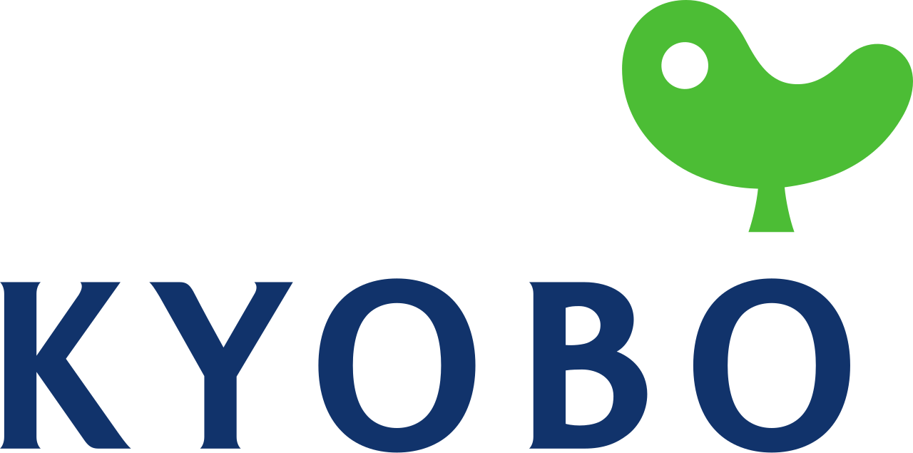

홈 > 브랜드 매거진 > 교보생명
교보생명
교보생명(Kyobo Life Insurance)은 1958년 대한교육보험으로 출발한 대한민국의 대형 생명보험회사다.
산업 분야 브랜드·비즈니스 · 공개 등급 자료 기반 · 브랜드 평가 4.2 ★

한눈에 보는 브랜드
교보생명은 1958년 6월 신용호가 대한교육보험이라는 이름으로 세운 한국의 대표 생명보험사다. 세계 최초로 교육보험을 창안해 학자금 마련 수요를 파고들었고, 1980년 광화문 교보빌딩과 교보문고를 통해 종합 브랜드로 도약했으며 1995년 지금의 사명으로 바꿨다.
2024년 연결 당기순이익 약 7,523억원으로 역대 최대 실적을 냈고, 자산은 약 122조원 규모로 삼성생명에 이은 업계 상위권을 지키고 있다.
브랜드 관점
교보생명의 위치는 자산 규모만으로 설명되지 않는다. 삼성생명·한화생명과 함께 수입보험료 기준 약 52%를 점유하는 3강 구도의 한 축이면서, 삼성·한화가 그룹 자본력에 기대는 것과 달리 창립 이념인 국민교육진흥과 광화문글판으로 대표되는 문화·공익 자산을 차별점으로 삼아왔다.
핵심 전략은 세 갈래다. 첫째, 보장성 중심으로 수익 구조를 다지며 IFRS17·K-ICS 체제에서 건전성을 관리하는 내실 경영.
둘째, 교보문고와 교보증권 등 계열을 묶는 금융지주사 전환과 그 전제인 기업공개(IPO). 셋째, 2013년 출범한 디지털 자회사로 비대면 수요에 대응하는 채널 다각화.
2025년 7년에 걸친 재무적투자자(FI) 풋옵션 분쟁이 지분 전량 매각으로 종결되고 일본 SBI그룹이 전략적 파트너로 합류하면서 지배구조 불확실성이 크게 줄었다. 저출산·고령화로 신규 수요 기반이 약해지는 한국 시장에서, 이 같은 지배구조 안정은 오랜 숙원인 상장과 지주 전환을 다시 추진할 동력을 의미한다.
시작과 성장
교보생명의 출발은 광복 직후 자본이 척박했던 한국 사회에 맞닿아 있다. 독립운동가 출신 창립자 신용호는 교육을 통한 국가 재건과 민족자본 형성을 신념으로 삼아, 1958년 6월 동료들과 함께 서울 중구 을지로에서 발기인 대회를 열고 회사를 대한교육보험으로 출범시켰다.
같은 해 7월 세계 최초로 교육보험 제도를 창안해 첫 상품 진학보험을 선보였고, 8월 정식 개업과 동시에 지방 지사를 빠르게 늘렸다. 첫 번째 도약은 1967년으로, 대형 단체저축보험 계약을 성사시키며 창립 9년 만에 업계 선두에 올랐다.
두 번째 전환점은 1980년이다. 서울 종로 광화문에 24층 사옥을 세워 본사를 옮기고, 그해 12월 지하층 전체에 교보문고를 열어 금융을 넘어 지식·문화 영역으로 사업을 확장했다.
이후 1991년 광화문글판을 시작하고 1992년 대산문화재단을 세웠으며, 1995년 사명을 교보생명으로 바꾸고 2013년 디지털 자회사를 설립하며 오늘의 모습을 갖췄다.
브랜드 아이덴티티
교보생명의 가치 체계는 생명 존중과 국민교육진흥이라는 창립 이념에서 출발한다. 비주얼 아이덴티티의 핵심은 2001년 도입한 워드마크로, 생명과 삶을 함축한 곡옥을 모티브로 삼아 영문 표기 위에 얹는 형태로 사람을 소중히 여기는 철학을 담았다.
2003년에는 기업 브랜드를 정점에 둔 단일 브랜드 체계를 세워 철학·비전·미션·약속·개성·슬로건을 언어·시각·청각·공간 표현으로 일관되게 운용한다. 가장 상징적인 자산은 1991년부터 계절마다 시구를 바꿔 거는 광화문글판으로, 따뜻하고 사색적인 브랜드 보이스를 도시 공간에서 직접 전한다.
타깃은 가계 보장과 노후·교육 자금을 준비하는 폭넓은 일반 가계 고객이다.
제품과 서비스
주력은 보장성 보험을 중심으로 종신·건강·연금과 변액 상품을 아우르는 생명보험이다. 창립의 뿌리인 교육보험 정신은 지금도 상품 철학으로 이어진다.
채널은 설계사 대면 영업을 근간으로 하되, 2013년 세운 국내 최초 디지털 생명보험 자회사를 통한 비대면 가입과 모바일 서비스로 넓혀왔다. 계열로는 교보문고를 비롯해 교보증권, 교보악사자산운용 등이 금융·문화 영역에 걸쳐 있다.
현재 상태
본사는 서울 종로 광화문 교보생명빌딩에 있으며, 신창재 회장이 이끈다. 지배구조는 2025년 재무적투자자와의 풋옵션 분쟁이 지분 전량 매각으로 종결되고 일본 SBI그룹이 전략적 파트너로 참여하면서 안정 국면에 들어섰으며, 회사는 금융지주사 전환과 기업공개를 추진하고 있다.
실적은 2024년 연결 당기순이익 약 7,523억원으로 역대 최대를 기록했고, 자산은 약 122조원 규모다. 향후 상장 시점과 지주 전환 인가 결과는 미공개.
타임라인
정리된 연도형 이벤트가 없습니다.
BI/CI 변천사
함께 읽을 브랜드
HL
한화생명
브랜드·비즈니스 · 자료 기반한화생명한화생명(Hanwha Life)은 한화그룹 계열의 대한민국 생명보험회사다.
YO
YO!
브랜드·비즈니스 · 편집 검수YO!YO!는 2016년에 기록된 Designed by Paul Belford Ltd 계열의 브랜드 아이덴티티 사례입니다. Paul Belford Ltd가 아이덴티티 작업...
 브랜드·비즈니스 · 자료 기반삼성생명
브랜드·비즈니스 · 자료 기반삼성생명삼성생명(Samsung Life Insurance)은 한국 최대의 생명보험사로, 1957년 동방생명으로 출발해 1989년 현 사명이 됐다.
KI
한국투자증권
브랜드·비즈니스 · 자료 기반한국투자증권한국투자증권은 한국투자금융지주가 지분 전량을 보유한 핵심 자회사로, 뿌리는 1974년 국내 최초 투자신탁 전업사로 출범한 한국투자신탁에 닿아 있다. 2003년 한국투...
 브랜드·비즈니스 · 편집 검수Bancomat
브랜드·비즈니스 · 편집 검수BancomatBancomat는 2025년에 기록된 Banking 계열의 브랜드 아이덴티티 사례입니다. Landor가 아이덴티티 작업의 디자이너로 기록되어 있습니다. 공개 섹션 정...
Ha
Hart Bageri
브랜드·비즈니스 · 편집 검수Hart BageriHart Bageri는 2025년에 기록된 Designed by Gretel 계열의 브랜드 아이덴티티 사례입니다. Gretel가 아이덴티티 작업의 디자이너로 기록되어...
Is
Islington Square
브랜드·비즈니스 · 편집 검수Islington SquareIslington Square는 2024년에 기록된 Designed by DNCO 계열의 브랜드 아이덴티티 사례입니다. Campbell Hay가 아이덴티티 작업의 디...
 브랜드·비즈니스 · 편집 검수Jaffa
브랜드·비즈니스 · 편집 검수JaffaJaffa는 2024년에 기록된 Big Brands 계열의 브랜드 아이덴티티 사례입니다. Earthling Studio가 아이덴티티 작업의 디자이너로 기록되어 있습니...